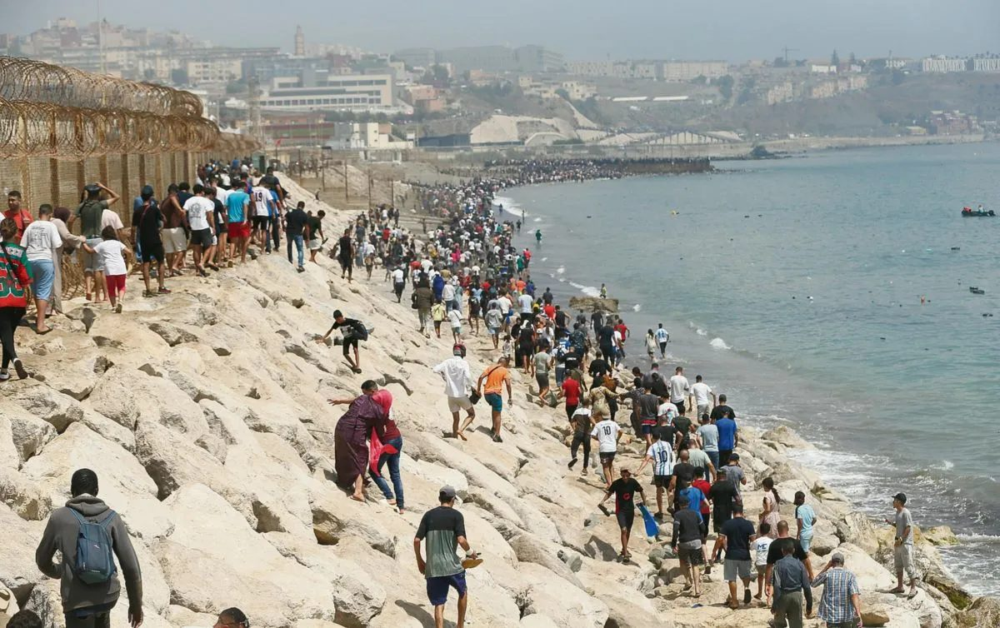

Imagen: EFE
Del 30 de julio al 3 de agosto de 2026, 72 mil personas, en su mayoría jóvenes marroquíes, cruzaron la frontera entre España y Marruecos, bordeando el espigón del Tarajal, en el norte de África.
Según el periódico internacional Reuters, hubo un total de 96 fallecidos y alrededor de 48 mil personas retornadas a Marruecos. Incluso en estas circunstancias, actores políticos y mediáticos han impulsado distintas narrativas para que esta crisis responda a sus intereses individuales, legitimando la violencia que se vivió durante estos días en Ceuta.
Para poder entender estas crisis, es importante no solo narrar el episodio de violencia, sino identificar a los actores principales, explorar las causas subyacentes y contrastar los relatos. Para esto, el triángulo de la violencia resulta especialmente útil: permite distinguir el hecho visible de las estructuras y narrativas que lo producen y sostienen.
La violencia directa se expresa de forma drástica. Cada una de estas muertes es un acto de violencia hacia un cuerpo, una vida y un momento identificable de daño irreversible: 96 personas que dejaron su vida, sus historias y sus familias atrás.
La violencia estructural se manifiesta como una distribución desigual de poder y recursos que limita sistemáticamente las capacidades y opciones de vida. Tal es el caso de la arquitectura fronteriza europea al norte de África, con estándares de transparencia deficientes y sistemas de rendición de cuentas ineficientes, o de la precariedad juvenil marroquí, que denota un déficit estructural de oportunidades económicas y laborales.
La violencia cultural no mata ni empobrece, pero sí es el terreno donde la violencia estructural y directa se vuelven aceptables. Es la batalla narrativa por qué relato se instala como verdad. En este caso, hay relatos que aseveran una invasión orquestada; otros hablan de una Europa militarizada, mientras que existe toda una infraestructura de desinformación que se ha propagado desde distintos lados.
Lo relevante aquí no es encontrar quién tiene la razón, sino entender que cada uno de los relatos busca simplificar el conflicto y esconder los factores estructurales que lo permiten.
¿Por qué Ceuta vuelve a ocurrir cada pocos años? No porque falte información sobre sus causas, sino porque el relato impide ver el patrón recurrente: la violencia estructural queda sepultada bajo una batalla narrativa donde a cada bando le resulta más rentable confirmar su propio marco ideológico que enfrentar las condiciones estructurales que permiten que la crisis se repita.
CIPMEX · Centro de Investigación para la Paz México, A.C. · Paz que se piensa, paz que se construye